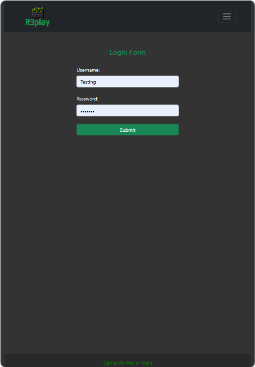
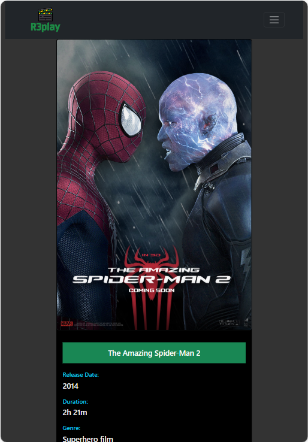
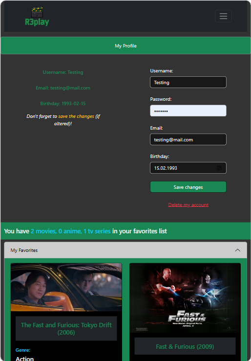
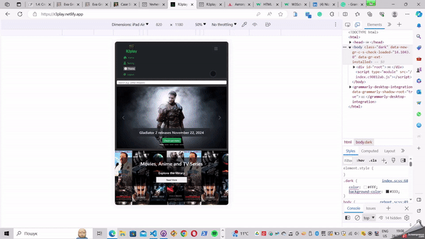
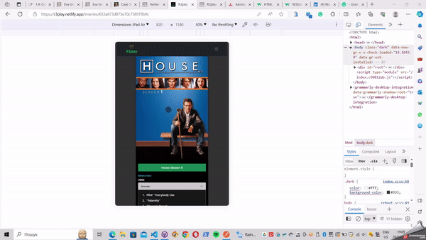

R3play is a web application, developed using the MERN stack, that provides users with information about movies, TV series, and anime. Users can access information about movies, directors, and genres. Users can create an account, update their information, and create a list of favorite movies, TV series, and anime.
R3play was a required project I developed as part of my full-stack immersion course at CareerFoundry to demonstrate my mastery of full-stack web development using JavaScript.
The project aimed to develop a fully-functioning full-stack project that I could add to my professional portfolio. The problem I wanted to solve was to build the complete full-stack web application by connecting the previously designed server-side and the client-side for the application from scratch.
I developed a RESTful API using Node.js and Express, that interacts with a non-relational database (MongoDB). The API employs common HTTP methods like GET, PUT, POST, and DELETE. To retrieve data from and store data in the database, CRUD methods are used. The API provides movie, TV series, and anime information in JSON format.
→ View EndpointsI used Postman to test responses and requests to the API. I also made use of basic HTTP authentication and JWT authentication to provide for the authentication and authorization features.
After completing the API project, I proceeded to build the front-end interface users would need when interacting with the logic and data from the API and the database. It is a single-page, responsive web application, developed with React and React-Redux. It displays several interface views, including (but not limited to) a main view (shows a list of all movies, TV series, and anime), single movie, TV series, and anime views (shows data about a single movie, TV series, and anime, and allows users to add or delete them to or from their list of favorites), a login view, a registration view and a profile view (where users can update their user data and list of favorites).
  This was both my favorite and most challenging project. I have enjoyed developing the user interface and working with database information. I also quickly enhanced my terminal skills and understanding of querying the MongoDB NoSQL database. While creating the client-side, it took me some time to understand how to implement Redux in React, troubleshoot the rendering of JSX elements with the ternary operator, and the conditional logic behind rendering the movie suggestions to the user. Thankfully, my skilled tutor and mentor assisted me during the project and I was able to apply the gained skills later on when implementing additional features to the app.
The development of the client side took me longer to complete as compared to the usual duration of a CareerFoundry achievement. The reason for this was that I needed more time to troubleshoot the conditional rendering of JSX elements and the lack of proper rest during that time.
Overall, I am happy with how the work on the project and the final result evolved. The achievement aimed to develop a movie app, but I took the risk to take extra time and implement additional features, among which were (but not limited to) TV series and anime views, changing the application theme, updating the Mongo database with additional data and displaying it in the front-end, auto-scrolling to the top when navigating to the new view. If I approached building the app next time, I would use better time-management skills that I have now and prioritize the project's requirements first. If I decided to improve the app today, I would customize the Mongo database's genres, actors, and directors' information to include many-to-many relationships.
 Mongo DB, MySQL
Javascript/React.js
React Bootstrap
API
CSS3
Responsive design
HTML5
Ajax
Mongo DB
Parcel
Deploying a website
Role: Lead Developer
Tutor: Tonny Ntambaazi
Mentor: Nizar Triki